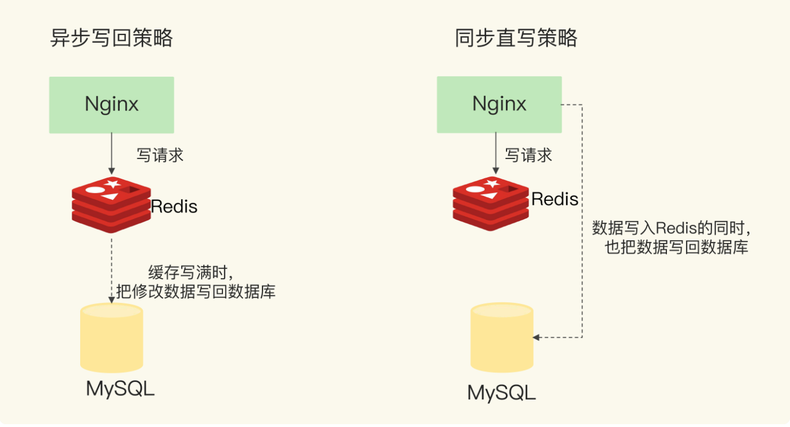

Redis核心原理与实战(4) 实战
1. 缓存
1.1 介绍
Redis 最常用的场景是在系统中作缓存使用，部署在数据库的前端，在访问数据时，先访问 Redis，无法访问到数据再访问数据库。
缓存可分为：
- 只写缓存：所有写操作直接发往数据库，读操作先访问缓存
- 读写缓存：读写操作都会经过缓存
读写缓存的写入分为两种策略：
- 同步直写：写请求同时发给缓存和数据库，两者都写完后才返回客户端。优点是保持了数据一致性，缺点是增加了响应延迟
- 异步写回：写请求先在缓存处理，等到数据将被缓存淘汰时，才同步给数据库

1.2 数据一致性
对于读写缓存而言，要保证数据一致性只能采用同步直写策略，并且数据库和缓存的写入必须是原子的。而对于只读缓存，保证数据一致性策略更为复杂，一般有以下策略。
1.2.1 设置过期时间
给缓存设置过期时间，所有的写操作以数据库为准，对缓存操作只是尽最大努力即可；数据库写成功，缓存更新失败，可以保证最终一致性。
1.2.2 先更新数据库，再更新缓存
该方案由于并发情况下会导致脏数据，一般不使用，例如 A，B 先后进行数据更新，但由于网络问题，A 在 B 之后更新了缓存，导致了脏数据。
1.2.3 先删缓存，再更新数据库
该方案也可能导致数据不一致，例如：
- 请求 A 进行写操作，删除缓存
- 请求 B 查询发现缓存不存在 ，B 去数据库查询得到旧值，B 将旧值写入缓存
- A 将新值写入数据库
上述场景请求 B 最终将旧值写入缓存，其他请求访问缓存得到的仍然是旧值。
解决方案是使用延迟双删，在 A 更新完数据库之后，睡眠一段时间，额外进行一次删除缓存的操作。
1.2.4 先更新数据库值，再删除缓存
如果 A 更新了数据库的值，B 在 A 还没更新缓存前仍会读到旧值，如果并发读缓存的请求不多，那只有少量错误，对业务影响比较小。
1.3 缓存击穿、穿透和雪崩
1.3.1 缓存击穿
缓存击穿指对于某个热点数据，无法在缓存中处理，访问该数据的大量请求直接发送到数据库。
解决方案：
- 热点数据永不过期
- 限制只有少量请求访问数据库并重新构建缓存
1.3.2 缓存穿透
缓存穿透指要访问的数据既不在 Redis 中，也不在数据库中，导致请求访问缓存之后都得再次访问数据库，缓存失去了作用。
解决方案：
- 缓存空值或缺省值
- 在业务层使用布隆过滤器判断数据是否存在
1.3.3 缓存雪崩
缓存雪崩指大量请求无法在 Redis 中处理，直接发送到数据库，导致数据库的压力激增。
缓存雪崩一般有两个原因，一个原因是缓存中大量数据同时过期，导致大量请求无法处理，解决方案有：
- 微调过期时间，添加一定随机值防止同时过期
- 服务降级：当发生缓存雪崩时，如果访问非核心数据，直接返回空值或者错误信息，如果访问核心数据，允许通过数据库读取。
另一个原因是 Redis 宕机，无法处理请求，解决方案是：
- 在业务中实现服务熔断或者请求限流，降低数据库的压力
- 建立 Redis 高可用集群
2. 分布式锁
在分布式系统中，某些数据也需要进行并发访问，需要加锁。分布式锁需要一个共享存储系统来维护，可以创建一个锁变量，相应的加锁、解锁操作就变成读取、判断和设置变量值。
Redis 可用于实现分布式锁，但需要考虑单机和集群两种场景。
2.1 单机实现分布式锁
一个直观想法是使用 SETNX 和 DEL 创建和释放锁，但这个方案存在两个问题。
一个问题是如果获取到锁的客户端发生异常，没有执行 DEL 命令释放锁，将导致死锁。针对这个问题，一个有效方案是给锁设置过期时间，注意过期时间的合理性，保证不会在业务在运行完之前释放锁。
另一个问题是无法区分客户端，A 使用 SETNX 创建了锁，但 B 使用 DEL 则直接释放了锁。解决方案是让客户端给锁变量设置唯一值，释放锁时使用 lua 脚本先判断 Redis 中锁变量的值与客户端的值，一致才能释放锁。
2.2 集群实现分布式锁
单机 Redis 节点宕机之后便无法提供服务，需要引入集群实现高可用的分布式锁。
上述单机分布式锁的解决方案可以作用在集群上，但如果主节点申请的锁还未同步到从节点，此时主节点宕机，重新选取的主节点未持有该锁，会导致两个客户端同时获得锁，一般业务场景可以容忍这个问题，追求更强的一致性可以使用 Redlock 算法。
Redlock 算法是 Redis 开发人员提出的分布式锁算法，其基本思路是，让客户端和多个 Redis 实例依次
加锁，如果和半数以上的实例完成加锁操作并且未超过锁的有效时间，则成功获得分布式锁，释放锁时向所有节点解锁。
3.消息队列
现在的互联网应用基本是分布式架构，而其中一个基础组件就是消息队列，那么 Redis 能够实现消息队列吗？
3.1 消息队列的需求
消息队列在存取消息时，需要满足三个需求：
- 消息保序：消费者能够按照生产者发送消息的顺序来处理，防止业务错误
- 重复消息处理
- 可靠性保证：由于网络或者机器故障，消息可能未处理完，需要能提供消息可靠性的保证
3.2 基于List实现
一个直观想法是使用 List 实现，List 是按照 FIFO 的顺序存储的，符合消息保序的需求。
生产者使用 LPUSH 命令写入消息，消费者使用 RPOP 从另一端拉取数据并处理。由于 List 不会主动通知有新消息，在消费侧需要死循环调用 RPOP 指令，带来性能损失，对此 Redis 提供 BRPOP 命令，BRPOP 为阻塞式读取，没有读到队列数据时会自动阻塞直到有新数据入队，节省 CPU 开销。
对于重复消息，List 没有提供保证，生产者在生产时需要提供全局唯一 id，消费者程序需要实现幂等消费。
对于可靠性，Redis 提供了 BRPOPLPUSH 命令，该命令需要维护两个 List，从列表中取出最后一个元素，并插入备份列表的头部，如果消费者未能正常处理，重启后从备份列表重新拉取处理。
3.3 Streams
Streams 是 Redis 5.0 专门为消息队列设计的数据类型，提供以下命令：
- XADD：插入消息，保证有序，并生成全局唯一 ID
- XREAD：读取消息，可以按 ID 读取
- XREADGROUP：按消费组形式读取消息
- XPENDING：查询每个消费组内消费组已读取但未确认的消息
- XACK：确认消息处理完成
对于 Redis 做消息队列，业界一直有所争议，认为应该使用 Kafka、RocketMQ 等专业的消息队列。笔者认为 Redis 基于 List 实现的消息队列较为繁琐，一般不推荐使用， Streams 使用较为简单，可用在消息通信量较小的场合。